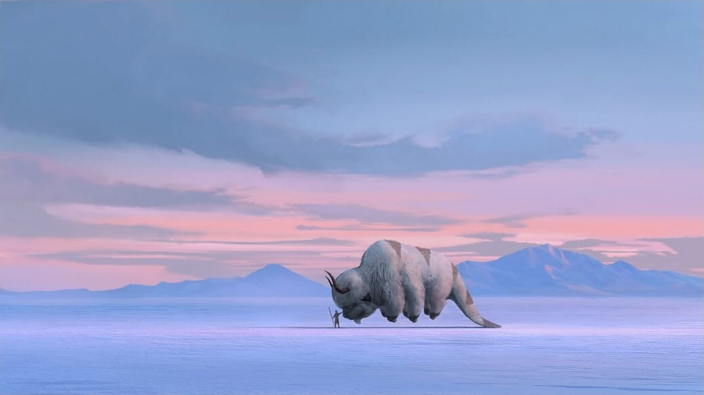
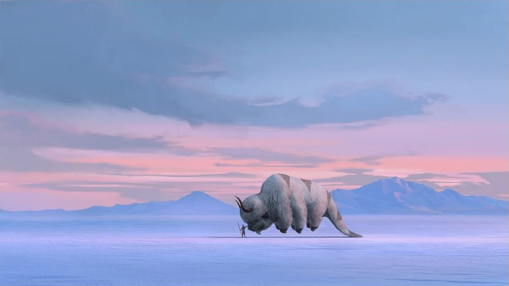

Welkom op Avatar: The Four Elements de grootste Nederlandse fansite over Avatar: De Legende van Aang en De Legende van Korra. Bekijk de nieuwste en oude afleveringen in het Engels en Nederlands. Op het forum kan je samen met andere fans gezellig praten over Avatar.
Nieuws
Originele makers avatar serie stappen uit Netflix adaptatie
Door glkx op donderdag 13 augustus 2020 om 23:27
In een openbrief hebben Michael Dante DiMartino en Bryan Konietzko onverwacht laten weten dat ze samen uit de Avatar Netflix adaptatie serie zijn gestapt. Twee jaar terug werd groots aangekondigd dat ze samen met Netflix aan een live-action adaptatie gingen werken. Daar lijkt nu plots een einde aan zijn gekomen. Voor veel fans zal dat een flinke schok zijn. Door de betrokkenheid van de twee makers keken veel fans van de animatie serie uit naar de adaptatie.
Michael en Byraan geven in hun openbrief aan, dat ze niet langer aan het project verder konden werken. Een verschil van mening in de richting het project maakten het voor hen onwerkbaar. Bryan schrijft: "Toen Bryan en ik in 2018 voor het project tekenden, werden we ingehuurd als uitvoerend producenten en showrunners. In een gezamenlijke aankondiging voor de serie zei Netflix dat ze toegewijd waren aan onze visie van deze hervertelling en ons wilde steunen bij het maken van de serie. We gaven aan hoe enthousiast we waren om de kans te krijgen om aan het roer te staan. Helaas ging het niet zoals we hadden gehoopt." Waar de meningsverschillen over ging wordt niet duidelijk uit de openbrief. Hoogst waarschijnlijk kunnen ze door contracten niet over praten.
In een reactie laat Netflix weten dat ze respect hebben voor hun keuze en dat de serie gewoon verder ontwikkelt zal worden, maar dan zonder de twee makers. Voor de fans zal het afwachten worden. Een eerdere adaptatie door M. Night Shyamalan mislukte volledig. Netflix zal dit zeker niet willen herhalen.
Bron: An open letter to Avatar: The Last Airbender fans
Michael en Byraan geven in hun openbrief aan, dat ze niet langer aan het project verder konden werken. Een verschil van mening in de richting het project maakten het voor hen onwerkbaar. Bryan schrijft: "Toen Bryan en ik in 2018 voor het project tekenden, werden we ingehuurd als uitvoerend producenten en showrunners. In een gezamenlijke aankondiging voor de serie zei Netflix dat ze toegewijd waren aan onze visie van deze hervertelling en ons wilde steunen bij het maken van de serie. We gaven aan hoe enthousiast we waren om de kans te krijgen om aan het roer te staan. Helaas ging het niet zoals we hadden gehoopt." Waar de meningsverschillen over ging wordt niet duidelijk uit de openbrief. Hoogst waarschijnlijk kunnen ze door contracten niet over praten.
In een reactie laat Netflix weten dat ze respect hebben voor hun keuze en dat de serie gewoon verder ontwikkelt zal worden, maar dan zonder de twee makers. Voor de fans zal het afwachten worden. Een eerdere adaptatie door M. Night Shyamalan mislukte volledig. Netflix zal dit zeker niet willen herhalen.
Bron: An open letter to Avatar: The Last Airbender fans
Netflix heeft plannen voor nieuwe live-action serie
Door glkx op woensdag 19 september 2018 om 17:10
Na het einde van De Legende van Korra zijn er, zoals velen hadden verwacht, weinig ontwikkelingen geweest rond Avatar. Het einde leek definitief. Echter is er deze week onverwacht en opwindend nieuws naar buiten gebracht. Netflix gaat samen met de orgininele makers van Avatar werken aan een live-action adoptatie van de serie Avatar: De Legende van Aang. Over het project zelf is nog niet veel bekend. Wel kunnen ze melden dat de productie in 2019 zal starten. Onderstaand een quote van Michael en Bryan uit de aankondinging.
“We zijn blij met de mogelijkheid om deze live-action adoptatie van Avatar: De Legende van Aang te kunnen maken." “We kunnen niet wachten om Aang's wereld tot leven brengen zoals we ons altijd al hadden voorgesteld, en met een cultureel passende, niet-witte cast. Het is een unieke kans om voort te bouwen op ieders geweldige werk aan de originele animatieserie en nog dieper in te gaan op de personages, het verhaal, de actie en de wereldopbouw. Netflix is volledig toegewijd aan het bouwen van onze visie voor deze hervertelling, en we zijn ontzettend dankbaar om met hen samen te werken.” – DiMartino en Konietzko

Het zal nog even wachten zijn tot dat we uberhaupt een releasedatum weten. Tot die tijd kan je je vermaken met The Dragon Prince. Een serie recent gereleased op Netflix. De schrijver Aaron Ehasz was ook schrijver en regiseur van Avatar: De Legende van Aang.
Bron: Deadline en The Verge
“We zijn blij met de mogelijkheid om deze live-action adoptatie van Avatar: De Legende van Aang te kunnen maken." “We kunnen niet wachten om Aang's wereld tot leven brengen zoals we ons altijd al hadden voorgesteld, en met een cultureel passende, niet-witte cast. Het is een unieke kans om voort te bouwen op ieders geweldige werk aan de originele animatieserie en nog dieper in te gaan op de personages, het verhaal, de actie en de wereldopbouw. Netflix is volledig toegewijd aan het bouwen van onze visie voor deze hervertelling, en we zijn ontzettend dankbaar om met hen samen te werken.” – DiMartino en Konietzko

Het zal nog even wachten zijn tot dat we uberhaupt een releasedatum weten. Tot die tijd kan je je vermaken met The Dragon Prince. Een serie recent gereleased op Netflix. De schrijver Aaron Ehasz was ook schrijver en regiseur van Avatar: De Legende van Aang.
Bron: Deadline en The Verge
Boek Balans helemaal op Dvd
Door glkx op zondag 15 november 2015 om 11:21
18 november 2015 verschijnt het 2de deel van Boek Balans op Dvd en is daarmee de allerlaatste Dvd die voor De Legende van Korra wordt uitgebracht. Na tien jaar en 9 maanden komt er officieel een einde aan de serie op televisie en dvd. Gelukkig komen er in de toekomst nog verschillende stripboeken uit met onze helden.
Nog een laatste keer
Door glkx op zaterdag 20 december 2014 om 02:01
De serie De Legende van Korra is officieel ten einde gekomen in een spetterend seizoensfinale. Mick en Bryan hebben zeven fantastische boeken gemaakt. Iedereen die Avatar niet kan missen, er is troost! In de toekomst zullen er meer stripboeken uitgebracht worden.

Trailer boek 4
Door glkx op zaterdag 27 september 2014 om 20:29
Populaire afleveringen

|
De Valstrik De Legende van Korra 15 keer bekeken |

|
De Aarde Koningin De Legende van Korra 13 keer bekeken |

|
Harmonische Convergentie De Legende van Korra 10 keer bekeken |

|
De Vuursturende Meesters De Legende van Aang 9 keer bekeken |

|
Burgeroorlog (Deel 1) De Legende van Korra 9 keer bekeken |
Forum
|
Live-Action Avatar: The Last Airbender Gereageerd door: Momoness |
|
Deel een serie hier! Gereageerd door: Momoness |
|
Avatar is terug met Avatar Studios Gereageerd door: Momoness |
|
Begin maar met kneden! Gereageerd door: Zukofan |
|
Michale en Bryan stappen uit Netflix serie Gereageerd door: Zukofan |
© 2021 Avatar: The Four Elements (3.6). Alle rechten voorbehouden. Contact Privacy Voorwaarden
"Avatar: The Last Airbender" is eigendom van Nickelodeon.
"Avatar: The Last Airbender" is eigendom van Nickelodeon.